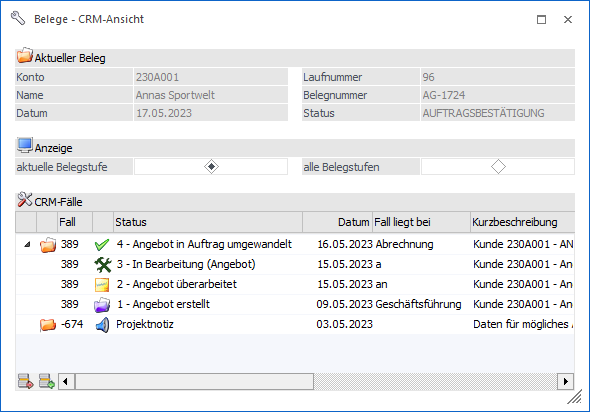
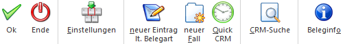

Über den Button "Beleg CRM" kann aus dem Hauptfenster der Belegerfassung bzw. aus der Belegverwaltung (Belegmanagement oder Belege) in das Fenster "Belege - CRM-Ansicht" gewechselt werden. Dort ist es möglich bestehende CRM-Fälle des Belegs zu betrachten, neue Fälle zu erfassen oder bestehende Fälle mit dem Beleg zu verknüpfen bzw. die Verknüpfungen zu entfernen.

Das Fenster unterteilt sich in die folgenden Bereiche, welche in den nachfolgenden Kapiteln beschrieben werden:
ü Anzeige
In der Anzeige werden
Informationen des aktuellen Belegs und der zugehörigen CRM-Fälle
ausgewiesen.
ü Einstellungen
Durch Anwahl des
Buttons "Einstellungen" können Einstellungen / Vorbelegungen für das Fenster
"Belege - CRM-Ansicht" getroffen werden.
Buttons

Ø Ok
Durch Anwahl des Buttons "Ok" bzw. der Taste F5 wird das Fenster geschlossen. Änderungen an den Optionen werden direkt benutzerspezifisch gespeichert.
Ø Ende
Bei Anwahl des Buttons "Ende" wird das Fenster geschlossen und alle nicht gespeicherten Eingaben verworfen.
Ø Einstellungen
Durch Anwahl dieses Buttons wird der Bereich "Einstellungen" geöffnet, in dem das Programmverhalten individualisiert werden kann.
Ø neuer Fall lt. Belegart
Mit Hilfe dieses Buttons kann ein CRM-Fall erfasst erwerden, welcher automatisch mit dem aktuellen Beleg verknüpft wird. Welche CRM-Aktion bzw. welcher CRM-Startpunkt hierbei ausgeführt wird ist abhängig von der Hinterlegung in der Belegart des aktuellen Belegs (WinLine FAKT - Stammdaten - Belegstammdaten - Belegarten - Register "Stamm" - Tabelle "Belegnummern" - Spalte "Workflow Erstdruck").
Hinweis
Wenn in der Belegart keine CRM-Aktion bzw. kein CRM-Startpunkt hinterlegt wurde, so wird bei Anwahl des Buttons eine entsprechende Meldung ausgegeben.
Ø neuer Fall
Durch Anwahl dieses Buttons wird das Fenster "Neuer Fall" geöffnet. Der von dort gestartete CRM-Fall wird automatisch mit dem aktuellen Beleg verknüpft.
Ø Quick CRM
Wenn dieser Button angeklickt wird, kann ein CRM-Fall zu dem aktuellen Beleg erfasst werden. Voraussetzung dafür ist:
ü Es muss eine gültige CRM-Lizenz vorhanden sein.
ü Der Benutzer muss ein CRM-Benutzer sein.
ü Es müssen entsprechende CRM-Aktionen bzw. CRM-Workflows mit der Kennzeichnung "QUICK CRM" angelegt sein.
Hinweis
Es werden im WinLine Standard 9 CRM-Aktionen (CRM-Gruppe "100") mitgeliefert.
Ø CRM-Suche
Mit Hilfe des Buttons "CRM-Suche" können bestehende CRM-Fälle mit dem Beleg verknüpft werden. Die Auswahl des Falls findet über die "CRM-Suche" statt.
Ø Beleginfo
Durch Anwahl des Buttons "Beleginfo" wird jener FAKT-Beleg angezeigt, welcher zu dem CRM-Fall bzw. dem einzelnen CRM-Schritt, upgeloadet wurden. D.h. falls z.B. ein Angebot mehrmals editiert wird und bei jeder Änderung ein CRM-Folgeschritt geschrieben wird, dann wird bei der Beleginfo das jeweilige Angebot angezeigt.
Hinweis
Falls im Upload kein Beleg vorhanden ist, dann wird die Standard-Beleginfo angezeigt.